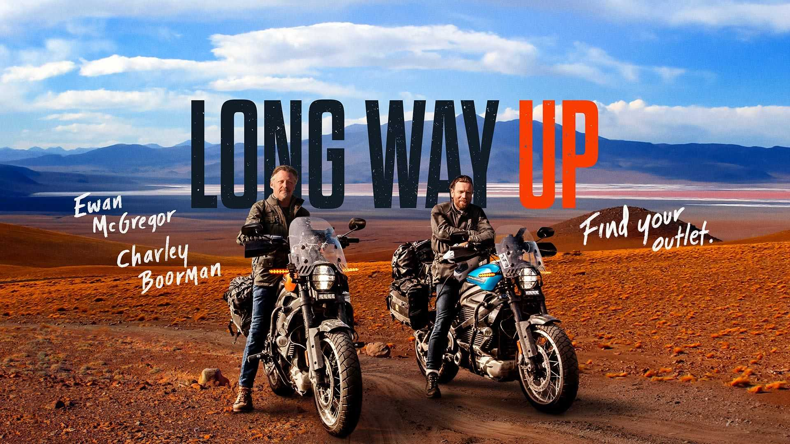
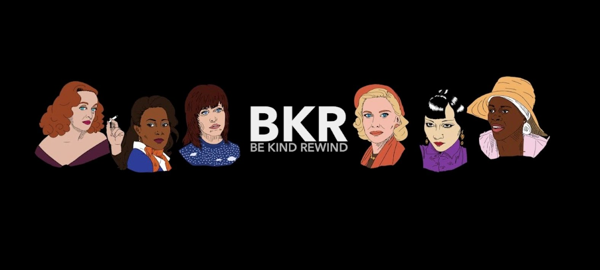

Caty
Parallel Mothers
Justin
Dune
Luke Collins
SVP, content strategy
Go to Luke’s pick


In the bleary-eyed early weeks of my maternity leave, I became obsessed with the Formula 1: Drive to Survive documentary series on Netflix. Formula 1 has never been an interest of mine, and I’d always associated car racing with Nascar or the Indy 500. But the show captures such drama, amazing technology, glamour, and egomania that it was hard not to get sucked in. At times, the whole F1 world—laden with ridiculous amounts of money—feels problematically indulgent. But that is also part of the fun, creating a backdrop for the drama among teams and drivers as they attempt to outpace each other in every possible way. This article sums up the show perfectly: “Basically, imagine the Real Housewives, if the housewives were driving around at 300 kilometers an hour, and if occasionally one of the housewives caught on fire.” But because I continue to attest that I hate reality TV, I’ll still call this a documentary series. Prepare to get hooked.
Alia Samhat
VP, Strategy and Planning
Go to Alia’s pick
Jen Bulat
managing editor
Go to Jen’s pick

If you absolutely, positively don't have time to read books—yet manage to slavishly stay on top of your Instagram, Twitter, Facebook, and who-knows-what-else social-media feeds—the book Stolen Focus is for you. Like pretty much anyone who remembers life before the internet, journalist Johann Hari sets out to understand just why he can no longer focus and his attention span is shot. In the process, he uncovers that it's not because he has no willpower but because we're collectively victims of a deliberate effort to get and keep us addicted to our devices (where we are, after all, the product big tech sells to advertisers). Stolen Focus is at once informative, interesting, hopeful, terrifying, and all too timely. Put down your phone and read it.

Boris
Licorice Pizza

This month we’re bringing you a mix of picks to inform and better yourself and just escape. These picks take you from Formula 1 and motorcycle adventures to books on device addiction and Ukraine, and we end by gearing up for awards season.

Our picks for Best Picture
Long Way Up documents the third epic motorcycle excursion the actor Ewan McGregor and his friend Charlie Boorman have taken. The first trip, documented in Long Way Round, saw the guys going from London east to New York; the second, Long Way Down, took them from John O’Groats in Scotland south to Cape Town, South Africa.
In Long Way Up, they’re riding electric Harley-Davidsons (and their crew are in prototype electric Rivian trucks) from the southernmost point of South America up to Los Angeles. Along with the goal of riding 13,000 miles in 100 days, they’re also facing challenges such as finding places in remote areas such as Patagonia to charge electric bikes.
All three series are compulsively watchable and terrific travelogues of some of the most beautiful and remote places on the planet.
Mary Reddy
senior adviser
Go to Mary’s pick
Yale historian Marci Shore observed that many Europeans and Americans know nothing about Ukraine and may think of conflicts there as quarrels “in a faraway country between people of whom we know nothing.” It’s easier to distance ourselves rather than confront the awful reality and human cost of war. To counteract this tendency, I searched for books about Ukraine to learn about the history and culture of the people—so that they stand out as human beings in my mind, not statistics or headlines. I came across this gem of a site, Five Books, and Shore’s list of the five best books to demystify Ukraine. The article itself is a good read, even if you don't make it to the books.


Ross Middleton
content manager
The Be Kind Rewind YouTube series is the perfect companion for Oscar season. Each episode takes a close look at movie stars and media culture, mostly through the lens of Best Actress and Best Supporting Actress Academy Award winners. It's illuminating, well-researched, funny, and often moving, with a distinct perspective on gender and film. I highly recommend the recent Ruth Gordon episode for fans of Rosemary's Baby, Hollywood trivia, and stories of unique personalities beating the odds.
Go to Ross' pick

Our picks for Best Picture